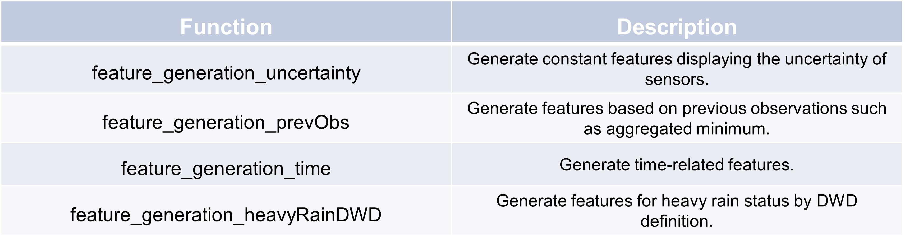

Feature generation methods#
An example feature generation method is shown.
This code generates a DataFrame with random data simulating weather-related features and applies the
feature_generation_uncertainty function from TSCC.preprocessing. The resulting DataFrame contains the
original columns ground_truth, raw, fea_1, and fea_2, with an added column,
sensor1, representing sensor uncertainty (set to 0.2 for all rows). The resulting DataFrame showcases how
uncertainty can be integrated into weather event analysis, enhancing model robustness.
>>> # Set random seed for reproducibility
>>> np.random.seed(0)
>>> # Generate random data
>>> data = np.random.randn(100, 4)
>>> date_range = pd.date_range(start='2024-08-01', periods=100, freq='5min', name = "timestamp")
>>> # Create DataFrame with specified column names
>>> df = pd.DataFrame(data, columns=["ground_truth", "raw", 'fea_1', 'fea_2'], index = date_range)
>>> df["raw"] = df["ground_truth"] + np.random.normal(0, 5, 100)*np.random.randint(0, 2, 100)
>>> TSCC.preprocessing.feature_generation_uncertainty(df, {"sensor1": 0.2})
ground_truth raw fea_1 fea_2 sensor1
timestamp
2024-08-01 00:00:00 1.764052 1.764052 0.978738 2.240893 0.2
2024-08-01 00:05:00 1.867558 -3.711927 0.950088 -0.151357 0.2
2024-08-01 00:10:00 -0.103219 3.730097 0.144044 1.454274 0.2
2024-08-01 00:15:00 0.761038 2.542502 0.443863 0.333674 0.2
2024-08-01 00:20:00 1.494079 -7.348613 0.313068 -0.854096 0.2
... ... ... ... ... ...
2024-08-01 07:55:00 -1.698106 -2.067729 -2.255564 -1.022507 0.2
2024-08-01 08:00:00 0.038631 0.038631 -0.985511 -1.471835 0.2
2024-08-01 08:05:00 1.648135 -0.923035 0.567290 -0.222675 0.2
2024-08-01 08:10:00 -0.353432 -5.443641 -0.291837 -0.761492 0.2
2024-08-01 08:15:00 0.857924 0.468650 1.466579 0.852552 0.2
[100 rows x 5 columns]
The following code generates a DataFrame with random weather-related features and applies the
feature_generation_prevObs function from TSCC.preprocessing. The function adds new columns that capture
previous observations, such as ground_truth_5prev and ground_truth_10prev, which represent the values
from 5 and 10 minutes before the current one. Additionally, it computes rolling statistics like hourly and 6-hour sums
or minimums for features like code:fea_1 and fea_2, enhancing the dataset with time-based aggregated insights.
>>> # Set random seed for reproducibility
>>> np.random.seed(0)
>>> # Generate random data
>>> data = np.random.randn(100, 4)
>>> date_range = pd.date_range(start='2024-08-01', periods=100, freq='5min', name = "timestamp")
>>> # Create DataFrame with specified column names
>>> df = pd.DataFrame(data, columns=["ground_truth", "raw", 'fea_1', 'fea_2'], index = date_range)
>>> df["raw"] = df["ground_truth"] + np.random.normal(0, 5, 100)*np.random.randint(0, 2, 100)
>>> print(TSCC.preprocessing.feature_generation_prevObs(df, timestep = 5, agg_numobs = 12, agg_name = "h"))
ground_truth raw fea_1 fea_2 \
timestamp
2024-08-01 00:00:00 1.764052 1.764052 0.978738 2.240893
2024-08-01 00:05:00 1.867558 -3.711927 0.950088 -0.151357
2024-08-01 00:10:00 -0.103219 3.730097 0.144044 1.454274
2024-08-01 00:15:00 0.761038 2.542502 0.443863 0.333674
2024-08-01 00:20:00 1.494079 -7.348613 0.313068 -0.854096
... ... ... ... ...
2024-08-01 07:55:00 -1.698106 -2.067729 -2.255564 -1.022507
2024-08-01 08:00:00 0.038631 0.038631 -0.985511 -1.471835
2024-08-01 08:05:00 1.648135 -0.923035 0.567290 -0.222675
2024-08-01 08:10:00 -0.353432 -5.443641 -0.291837 -0.761492
2024-08-01 08:15:00 0.857924 0.468650 1.466579 0.852552
ground_truth_5prev ground_truth_10prev \
timestamp
2024-08-01 00:00:00 NaN NaN
2024-08-01 00:05:00 1.764052 NaN
2024-08-01 00:10:00 1.867558 1.764052
2024-08-01 00:15:00 -0.103219 1.867558
2024-08-01 00:20:00 0.761038 -0.103219
... ... ...
2024-08-01 07:55:00 0.643314 0.841631
2024-08-01 08:00:00 -1.698106 0.643314
2024-08-01 08:05:00 0.038631 -1.698106
2024-08-01 08:10:00 1.648135 0.038631
2024-08-01 08:15:00 -0.353432 1.648135
... fea_1_sum_h fea_1_sum_6h fea_2_min_h \
timestamp ...
2024-08-01 00:00:00 ... NaN NaN NaN
2024-08-01 00:05:00 ... NaN NaN NaN
2024-08-01 00:10:00 ... NaN NaN NaN
2024-08-01 00:15:00 ... NaN NaN NaN
2024-08-01 00:20:00 ... NaN NaN NaN
... ... ... ... ...
2024-08-01 07:55:00 ... -5.023972 -16.145175 -1.437791
2024-08-01 08:00:00 ... -5.325472 -17.257598 -1.471835
2024-08-01 08:05:00 ... -4.070344 -15.419822 -1.471835
2024-08-01 08:10:00 ... -3.997487 -15.298041 -1.471835
2024-08-01 08:15:00 ... -1.766765 -15.699021 -1.471835
fea_2_mean_6h fea_2_sum_h fea_2_sum_6h
timestamp
2024-08-01 00:00:00 NaN NaN NaN
2024-08-01 00:05:00 NaN NaN NaN
2024-08-01 00:10:00 NaN NaN NaN
2024-08-01 00:15:00 NaN NaN NaN
2024-08-01 00:20:00 NaN NaN NaN
... ... ... ...
2024-08-01 07:55:00 0.164007 -1.432945 11.808516
2024-08-01 08:00:00 0.137982 -4.564330 9.934691
2024-08-01 08:05:00 0.121425 -3.572928 8.742619
2024-08-01 08:10:00 0.121230 -4.491124 8.728582
2024-08-01 08:15:00 0.120487 -2.200781 8.675089
[100 rows x 48 columns]